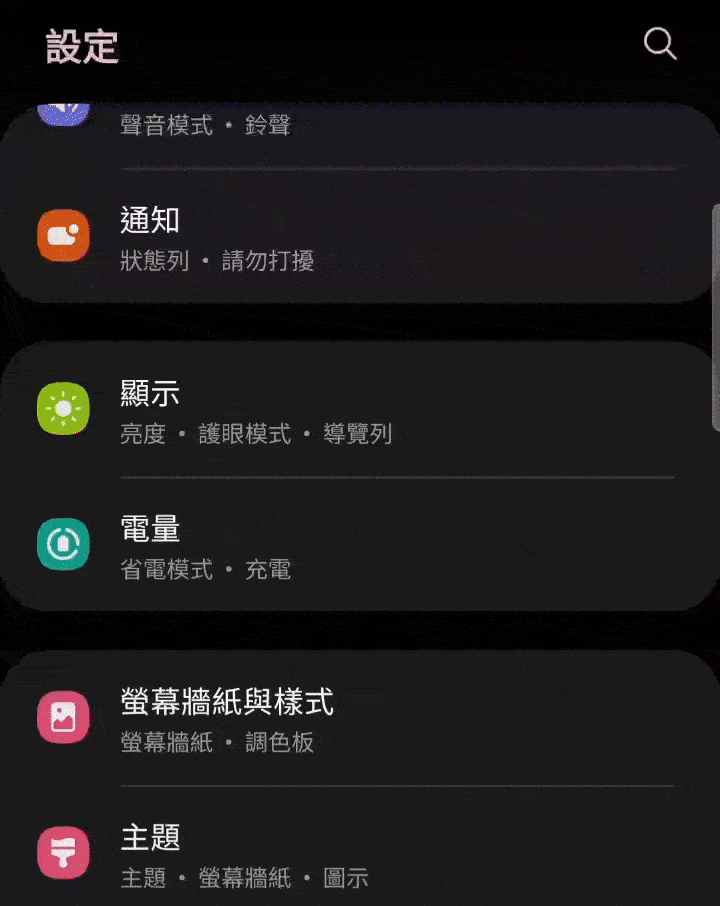

Android 手機靜音方法
方法一
1. 按下側邊的音量降低鍵，直到出現音量控制條。
2. 點擊音量條上的「⋮」或「設定」圖示，將「通知」或「媒體」音量調至靜音。

方法二
1. 從螢幕頂端拉下選項
2. 將喇叭圖示按至靜音圖案

1. 找到手機左側的「靜音開關」一個可滑動的小按鈕。
2. 將開關向下推至出現「靜音模式」彈窗，手機進入靜音模式（震動模式）。
3. 向上推回，出現「鈴聲」彈窗，即可取消靜音。
1. 按下側邊的音量降低鍵，直到出現音量控制條。
2. 點擊音量條上的「⋮」或「設定」圖示，將「通知」或「媒體」音量調至靜音。
1. 從螢幕頂端拉下選項
2. 將喇叭圖示按至靜音圖案